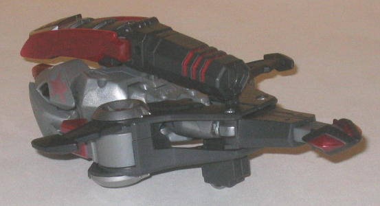
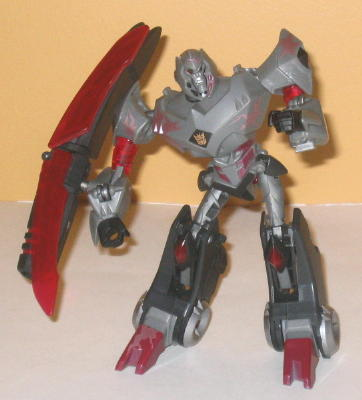
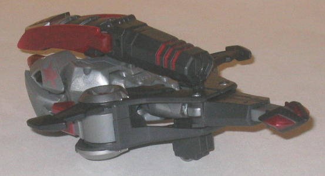
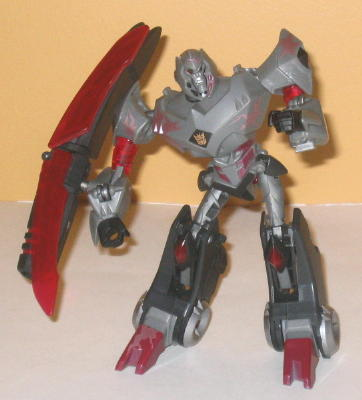
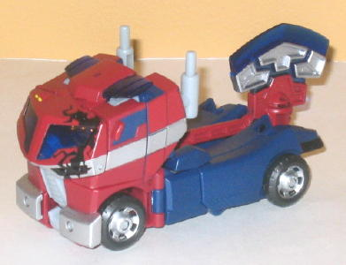
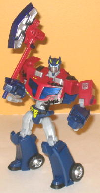

 
Allegiance : Decepticon
Size : Deluxe
Difficulty of Transformation : Easy
Color Scheme : Charcoal black, moderately dark gray, and some dark red, silver, transparent dark red, and dull metallic purplish bronze
Individual Rating : 7.6
Price
: $20 (U.S.) (comes with DVD
of first episode of series)
Overall Rating
: 8.5
 Megatron
(Cybertron Mode)
Megatron
(Cybertron Mode)


Allegiance
: Decepticon
Size
: Deluxe
Difficulty of Transformation
: Easy
Color Scheme
: Charcoal black, moderately
dark gray, and some dark red, silver, transparent dark red, and dull metallic
purplish bronze
Individual Rating
: 7.6
Megatron's Cybertronian
vehicle mode is essentially a flying gun. There's something undeniably
cool about that, but you know it's a point against the alternate mode when
you really don't know which way is the front. It would appear that the
"official" front is the front pictured above, with the gun pointing forward,
though personally, I think it looks a bit better pointed in the opposite
direction, with the butt-end of the gun forming the "cockpit" of the vehicle.
It also makes for a more meaty front part of the vehicle mode, with the
tailfins being acceptably small instead of the official way where the front
end of the vehicle is tiny. Regardless, this mode isn't TOO bad if you
look at it from a top-down view. The robot arms sticking out the back end
(and I'm going by what's officially called the back and front ends, now)
are painfully obvious, and for those a bit familiar with the way Transformers
convert it's fairly obvious that the robot feet make up the sides, but
they generally all fit in with the generall shape of the mode. The wings
are pitifully small, however, so he doesn't look like he'd be able to fly
at all. There's also no real back end to the vehicle mode-- it's just his
arms folded up with the butt of the gun covering up his upper robot mode.
From any mode resembling a side-view, you can easily see his robot head
between the arms in the back there, and his upper body transforms so little
that if you look at the toy from a bottom angle, it looks like he's doing
an interesting form of yoga. I do like the silver "turbines" near the center
of this mode, though-- that's a neat touch, and the detailing near the
rear of the gun is pretty cool-looking as well, the way little transparent
red slits are visible through the black paint. The color scheme is certainly
quintessentially Megatron, of course, with black and gray being the major
colors, with some red and silver in there to liven things up a bit. It's
not outstandingly awesome of a color scheme, but it works well and is certainly
fitting for the character. Megatron has three landing gear wheels in this
mode, though they're non-retractable, which is unfortunate for a deluxe-sized
figure.
Megatron's robot mode
is definitely what the toy was made for, however. He's got no real vehicle
mode extras and proportions that are perfect for the slightly-exaggerated
Animated style. The style of his head is also rather reminiscent of Movie
Megatron's, which is a nice homage. The transformation itself is a bit
TOO simple, though, involving little more than folding all of Megatron's
limbs out and snapping a few panels into place. The detailing on some parts--
particularly his chest and head-- is really nice, though, especially for
an Animated toy. He also has a ton of movement-- he can move at the neck,
shoulders (at three points), elbows (at two points), hips, and knees (at
two points). His waist can also rotate, though due to the "auto-smack"
gimmick that both of the Battle Begins figures have, his upper body will
snap back into place after you let go of it. His proportionally huge gun
can be mounted easily on a peg on his lower right arm, though unfortunately
it cannot fire. One of the translucent red blade pieces on the sides of
the gun can be swung around to give Megatron a full-fledged blade weapon
in this mode, albeit it one that's permanently attached to his gun. There
are a few minor problems I have with this mode, however. For one, the hip
joints can be rather loose-- not a huge problem, but worth noting. I'm
also not fond of him having translucent red upper arms-- having translucent
main body parts without any real reason for them has never made any sense
to me. I'm also not hugely fond of his "battle damage" paint applications,
which are cartoonish purplish-bronze edgey patches here and there on his
body. I don't mind the cartoony nature of them, but having a purplish-bronze
color looks odd, as that's not what you'd think scars would look like on
him-- wouldn't they be more of a black color, like on Prime? Also, the
battle damage is purely done with just paint applications-- the actual
mold shows no battle damage whatsoever-- and considering that this Battle
Begins 2-pack was what this mold was created for, I think it was rather
foolish to not mold in some of that battle damage to make the toy more
unique.
 Optimus
Prime
Optimus
Prime


Allegiance
: Autobot
Size
: Deluxe
Difficulty of Transformation
: Medium
Color Scheme
: Dark navy blue, dull
red, and some transparent dark blue, dull yellow, silver, light milky bluish
gray, and black
Individual Rating
: 9.3
Optimus Prime, oddly
enough, is in his Earth mode, not his Cybertronian form like Megatron.
Even though Prime never faced Cybertronian Megatron in this form on the
show. Um. Anyways, this is a pretty good representation of Optimus Prime
for the deluxe class, if you don't mind (or prefer) the battle damage.
The battle damage is the proper color here-- black-- though I have to say,
with the angular cracks and everything, it looks like some kinda of weird
infection. The proportions are perfect for Animated's style while still
keeping plenty of Prime's classic look in there-- the colors are quintessentially
Prime, though they're noticeably duller and darker (and less show-accurate)
than his other toys. Odd, that. From most angles, only the robot feet hanging
off the back end are "robot mode extras" that are visible in this mode---
everything else sits pretty flush with the truck's form. (I'm discounting
the axe here, since that was obviously meant to be an add-on weapon attachment
and not merge with the truck in any shape or form.) However, from a rear
view, you can see Prime's robot fists on the backside of the truck cab,
which is a bit of a downside-- Cybertron Mode Optimus Prime's vehicle mode
was better about hiding that kind of stuff. One additional oddity about
this mode is that Prime has four rotating tires on his back end-- including
two that are on the rear interior! It's pretty weird-looking in this mode,
though it makes him look more symmetrical in robot mode.
Speaking of Prime's
robot mode, it and its and transformation are nearly identical in almost
every way to
Cybertron Mode Optimus Prime's
--
the differences are in the details (though they are in no way remolds of
each other, they're completely different toys). The only differences in
the transformations have to do with the way the weapon detaches and a minor
difference with the arms. The proportions on both are pretty much perfect,
and there's no real vehicle mode kibble to speak of, though a minor quibble
on this Prime is that the sides of his upper chest are a bit more square
and less flush with the rest of his body. His articulation is also incredible,
with movement at the neck, shoulders (at two points), elbows (at two points),
hips, and knees (at two points). Like Megatron, he also has movement at
the waist, but it's spring-loaded so that as soon as you let go, he spins
back into place. He also has some limited wrist movement because of his
transformation. This version of Prime has his face mask up, which I think
looks better, even though in the show he spends almost all the time with
it down. And it's much more suiting for a "battle damaged" version, besides.
His exhaust pipes on his forearms are seperate pieces, and if you want
to be a little imaginative, can be rotated around to become arm-mounted
"guns" in this mode, though they also fall off a bit easily when they're
not in their normal position. The reason this Prime beats out Cybertron
Mode Optimus in my opinion, though, is because of his GLORIOUS axe. It's
huge, much bigger than Cybertron Mode Prime's, and more show-accurate with
its "split-apart" transparent blade and a bit of a "rocket booster" on
the back end.
Overall, I think that this two-pack is pretty much a must-buy for anyone who wants the leaders of the Animated line. Yeah, some may not like the battle damage, but even if you don't, that's a small price to pay for what are, in my opinion, both the best toys of Optimus Prime (overall) and Megatron (in his Cybertronian form). Prime is just an amazing toy all around, and even if he has an iffy vehicle mode, Megatron has a nice robot mode, and doesn't have some of the problems that his Voyager-class toy does.
Review by Beastbot